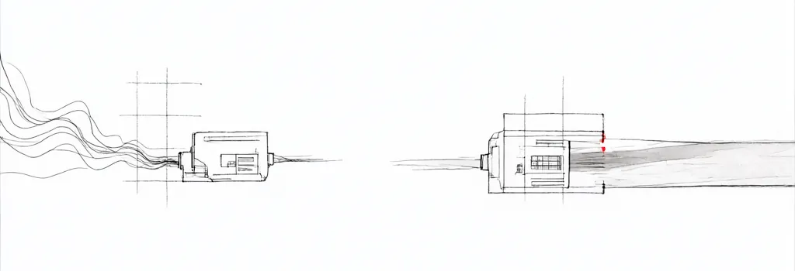

Three seconds to ship.
Beets&Roots is a fast-casual restaurant concept, founded in 2016, serving healthy freshly prepared bowls, salads, wraps and soups. The ordering interface had accumulated weight, and a production deployment took four minutes — long enough that shipping became an event rather than a habit.
Ten-plus people in the wider team, so the deploy path had to be someone’s everyday tool, not a ritual only one person understood.
- Role
- Senior Software Engineer
- Dates
- Sep 2020 – Jan 2021
- Focus
- Interface revamp, performance, release path
- Stack
- Python, React, AWS, Nginx
The problem
An ordering screen is read in a queue, in daylight, often on a phone held at arm’s length. Slow paint and a four-minute deployment both show up as the same thing to the person at the counter: waiting.
Nothing about the fix required a redesign; it required removing weight and making the release path boring.
Lighter screen, faster hand-off.
ApproachRevamp by subtraction
Fewer states, fewer wrappers, one layout pass. The interface reads at counter distance because it stops re-laying itself out.
Deploy in seconds
The pipeline stopped rebuilding what had not changed. Four minutes became three seconds, so a small fix ships while it is still in context.
Errors with an address
Error monitoring on the production environments, so a defect arrives with the context needed to find its root cause instead of a screenshot from a customer.
Outcome
